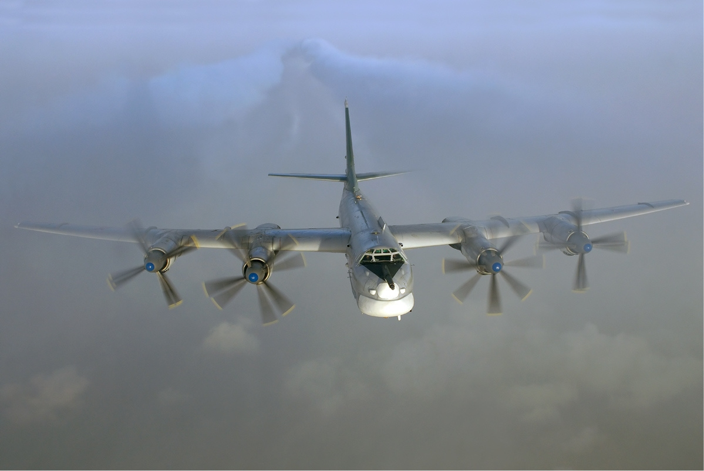
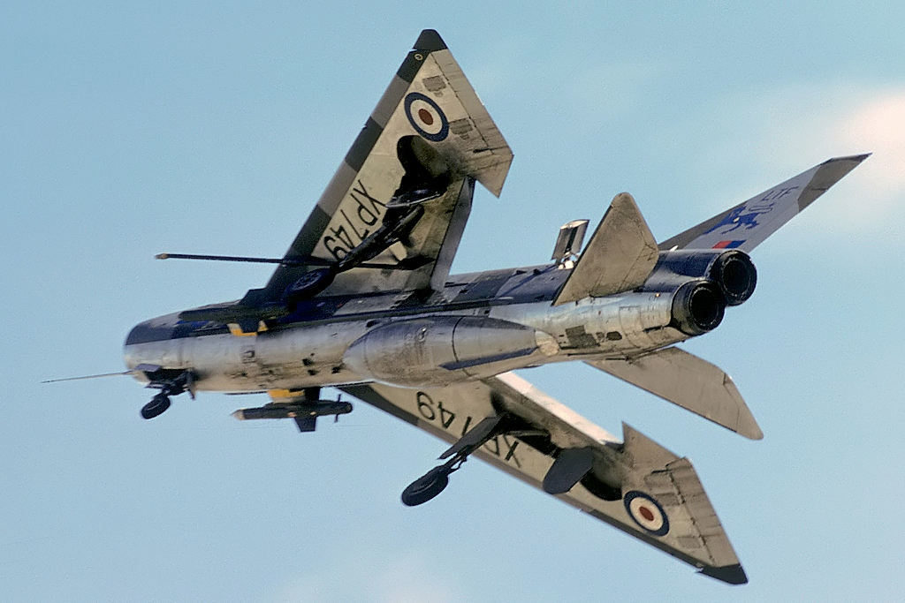
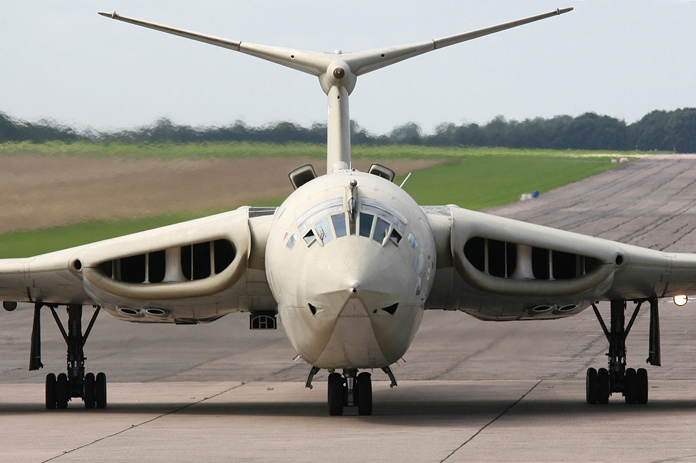
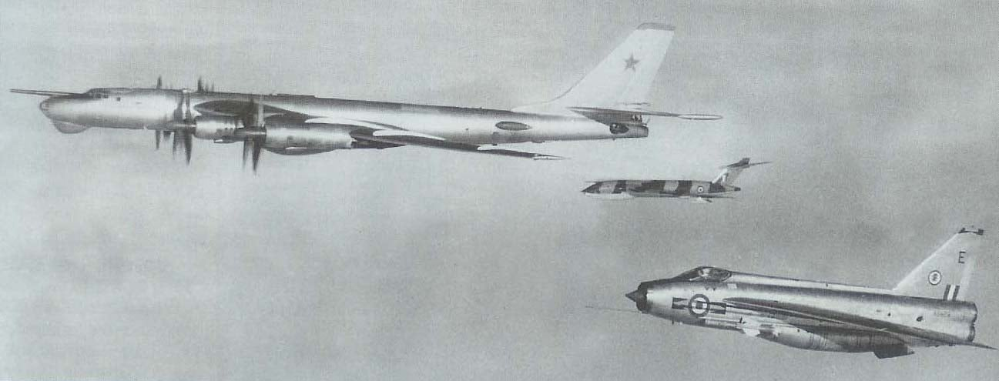
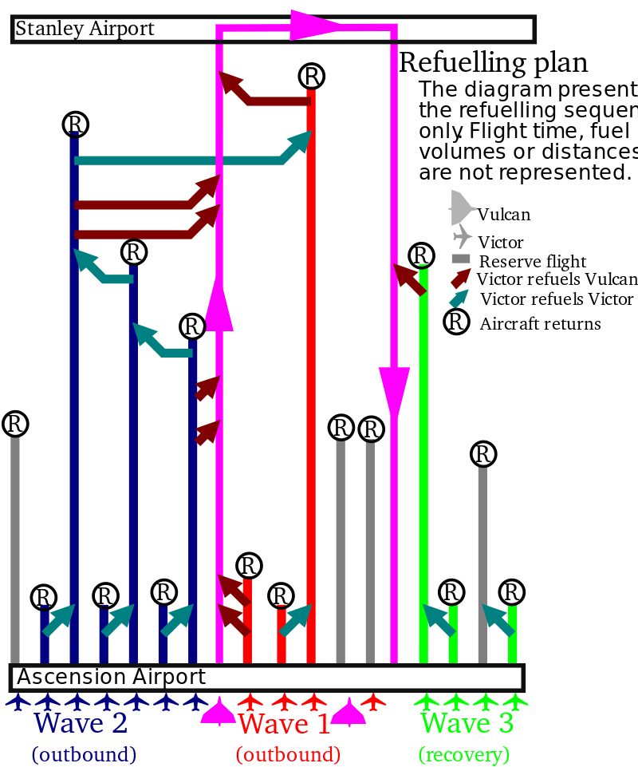
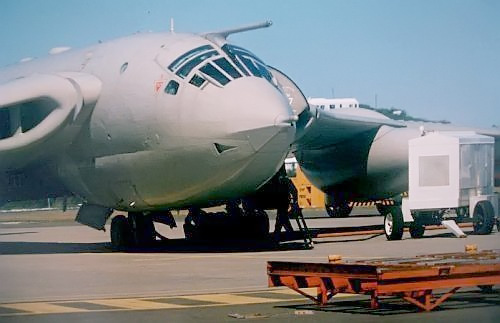
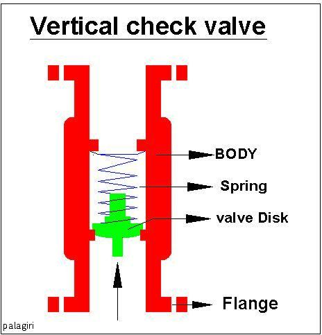
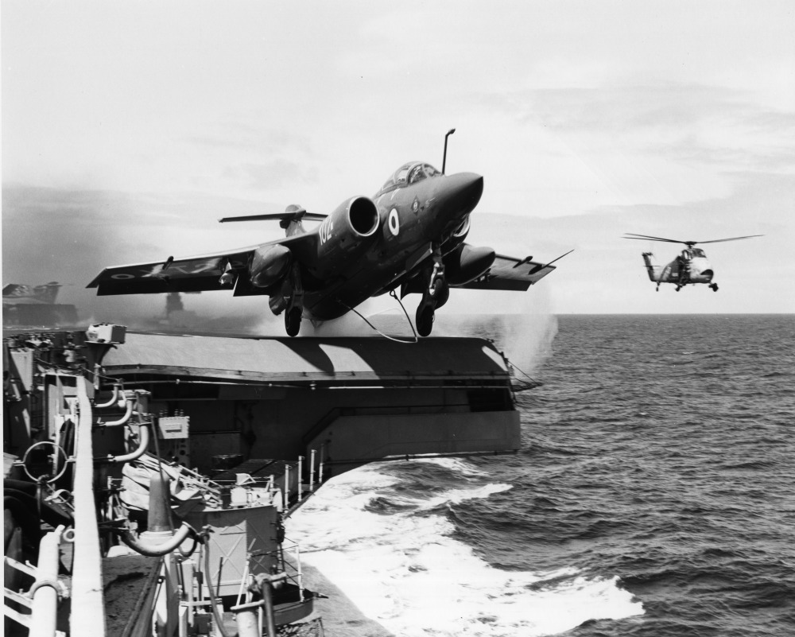
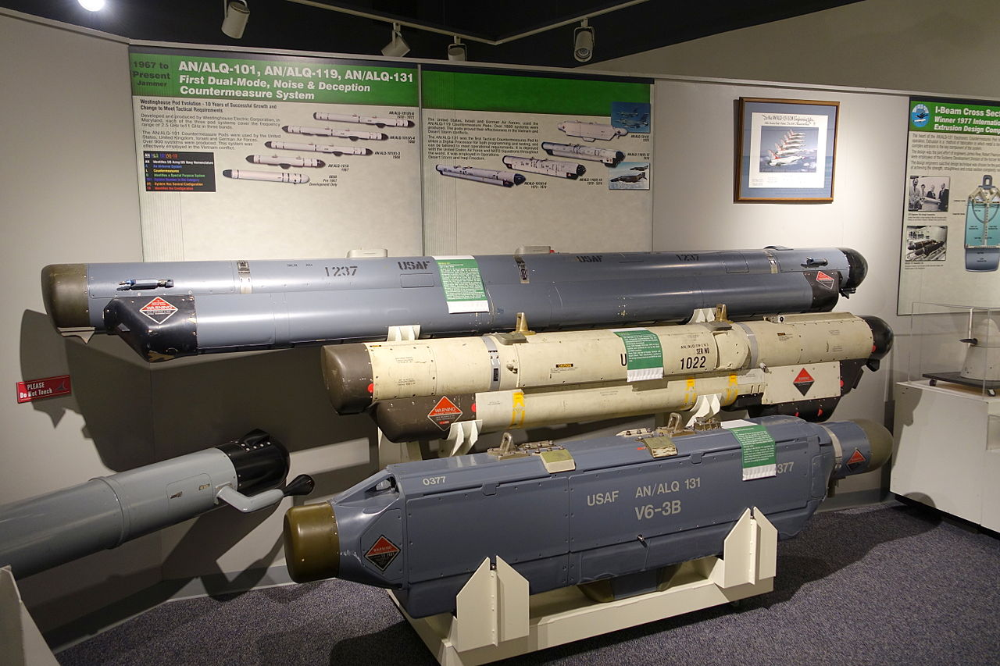
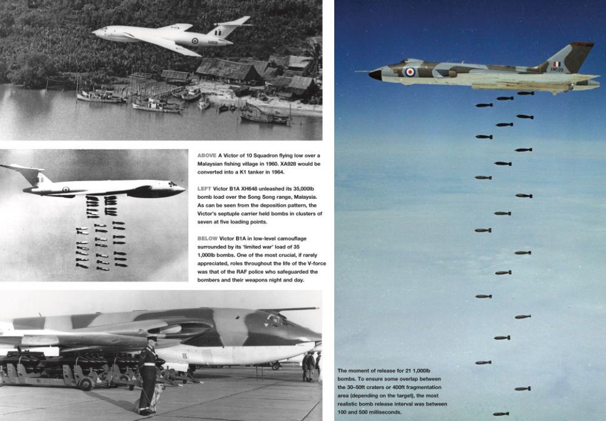

포클랜드 전쟁 잡담 - 고물상을 뒤지는 영국 공군
게시: 2022-01-06T06:30:50+09:00
<'곰'이 살린 '검은 숫사슴'> 원래 영국 공군의 작계에 따르면 남대서양의 포클랜드 섬은 너무 멀고 영국공군은 장거리 타격 능력이 없기 떄문에, 그 섬이 침공당할 경우 그 방어는 로열네이비와 육군에게 맡기고 공군은 정찰 및 수송 정도만 지원하는 것으로 되어 있었음. 그러나 1980년대 초, 댓처의 무자비한 국방예산 감축에 육해공군이 모두 정신없이 칼질을 당하다가 포클랜드 전쟁이 터지자, 영국공군은 '여기서 밥숟가락 못 얹으면 영국공군은 전후에 집중 예산삭감 대상이 된다'라는 절박감에 무조건 타격작전을 펼치기로 작정. 영국공군이 가진 유일한 장거리 폭격기는 전세계 소년들의 상상력을 자극했지만 사실 별 볼일 없었던 Avro Vulcan 뿐이었는데 사실 이것도 영국-소련 전쟁을 상정한 중거리 폭격기라서 적도 인근 아센시온 기지에서 출격해도 남대서양의 포클랜드까지는 도저히 무리. 그나마 얘들도 1956년 도입된 낡은 기종으로서, 원래 바로 3개월 뒤인 1982년 7월 1일 모조리 퇴역할 예정이었음. 그런데 영국 공군은 자주 날아오는 Tu-95 덕분에 공중급유기 전력이 꽤 든든했음. 장거리 폭격기인 Tu-95 (사진1)가 영국 일주를 위해 날아오면 영국 측에서는 English Electric Lightning (사진2) 등의 제트 전투기가 에스코트를 나갔는데, 특히 일렉트릭 라이트닝은 연료효율이 좋지 않고 전투 반경이 짧아 거의 언제나 공중 급유기가 짝을 이루어 날아다니며 라이트닝에게 기름을 먹였던 것. 그래서 원래 폭격기로 개발된 Handley Page Victor (사진3)들을 일찌감치 공중급유기로 개조하여 운용하여 공중급유기들은 숫자와 훈련 상태가 매우 양호. 결국 벌컨 폭격기에 의한 포클랜드 폭격 작전인 Operation Black Buck이 가능했던 것은 어찌 보면 소련의 Tu-95 Bear 덕분.
** 사진4는 복잡한 삼각관계... 도도한 Tu-95, 그를 바라보는 불안한 눈빛의 English Electric Lightning, 그리고 다시 그를 애처롭게 쳐다보는 Handley Page Victor.
   
<배보다 배꼽이 더 크다> 'Black Buck' 작전의 목표는 Port Stanley 공항의 활주로를 파괴하는 것. 원래 핵탄두 투하용으로 개발된 벌컨에 탑재 가능한 폭탄은 무유도 1000파운드 폭탄 21발. 그러나 폭탄을 많이 실을 수록 포클랜드까지 날아가는데 필요한 공중급유 횟수가 많아지고, 또 활주로 부수는데 폭탄이 많이 필요하지도 않기 때문에 그냥 1000파운드 7발만 싣고 가기로 함. 그런데 영국 공군의 폭격 연습장인 Garvie Island에서 훈련을 해보니 7발만 투하할 경우 의외로 활주로 파괴 확률이 별로 높지가 않았음. 21발 다 투하해야 90% 확률로 성공. 그래서 남자답게 그냥 21발 다 싣고 가기로 함. 폭탄 투하에는 벌컨 1대면 충분. 그런데 혹시 1대에 문제가 발생할 경우 이 거창한 계획이 틀어지므로 백업용으로 1대를 더 동원. 그런데 그러다보니 필요한 공중급유기도 더 늘어남. 게다가 공중 급유 1번만으로는 당연히 도저히 포클랜드까지 갈 수가 없었고, 여러번 급유를 해줘야 함. 그래서 공중급유기 빅터도 여러대가 필요. 그런데 그렇게 먼 거리를 가려면 빅터 자신도 공중급유를 받아야 함. 그래서 공중급유기 빅터가 더 필요함. 그런데 빅터에게 급유를 해줄 빅터도 또 다른 빅터로부터 공중급유를 받아야 함. 그래서 결국 포클랜드로 날아가는 편도에만 1대의 벌컨은 총 7번 급유를 받았으나, 그를 위해 4대의 빅터가 필요했고, 그 4대의 빅터에게 급유를 해주기 위해 5대가 더 동원됨. 이 빅터들끼리의 공중급유 계획표는 훨씬 더 복잡. 그나마 폭탄 다 떨구고 가벼운 몸으로 돌아오는 길에는 1번의 공중급유만으로도 충분해서 다행. 그러나 돌아오는 길에 공중급유를 해줄 빅터에게 또 급유를 위해 결국 2대의 빅터가 동원됨. 동원되었던 2대의 벌컨 중 1대는 고장으로 되돌아왔기에 이 정도로 그침 (사진1). 그나마 이 모든 것이 가능했던 것은 공중급유기 빅터가 원래 폭격기로 개발된 것이라서 그 자체도 공중급유를 받을 장치를 갖추고 있었서였음 (사진2).
 
<살림살이를 박박 긁어모으다> 목표가 생겼으니 이제 폭격 준비를 해야 했던 영국 공군이 살림살이 보관한 창고를 열어보니 한숨만 푹푹. 가장 큰 문제는 대공미사일의 발달로 인해 이제 퇴물이 되어버린 벌컨에 대해 아무도 소련 깊숙히 침투해서 폭탄 투하하라는 요구를 하지 않았던지라, 최근 10년간 공중급유를 해본 벌컨 조종사가 하나도 없었다는 점. 그거야 부랴부랴 훈련을 실시한다고 치고, 더 큰 문제는 10년간 써보지 않은 파이프는 다 막히고 녹슬고 고장난다는 사실. 공중급유를 위한 파이프 여기저기가 다 엉망이라 교체를 해야 했음. 원래 공중급유를 위한 연료관은 연료가 반드시 급유기로부터 폭격기로만 흐르고 절대 반대방향으로는 흐르지 않도록 check valve (사진1)을 쓰게 되어 있는데, 이것이 다 고장 나있어서 전량 교체해야 했음. 그런데 곧 퇴역할 폭격기에게 예비 부품이 있을리가? 떨리는 마음으로 창고를 뒤져보니 다행히 check valve 부품이 20개 발견됨. 날 수 있고 공중급유 받을 수 있다고 끝이 아님. 1950년대에 개발된 폭격기가 대공미사일에 맞아 떨어질 가능성을 줄이려면 ECM(Electronic CounterMeasure)이라도 붙여야 하는데 벌컨에는 '그런거 없다'. 그래서 1960년대 초에 도입되었던 구식 함재 공격기 Blackburn Buccaneer(사진2)에 쓰던 ECM 장치인 AN/ALQ-101 (사진3 속 맨 위)를 떼어내 날개 밑에 붙이기로 함. 그런데 그걸 붙이려면 거기에 맞는 pylon(날개 밑에 미사일이나 폭탄을 장착할 부착대)이 있어야 하는데 벌컨에는 역시 '그런거 없다'. 결국 미공군의 항공기 발사 탄도탄 GAM-87 Skybolt 용으로 가지고 있던 파일런을 조금 고쳐서 쓰기로 함. 그리고 무유도 폭탄 밖에 쓸 수 없었으므로 어쩔 수 없이 저고도 폭격을 해야 함. 이런 대형 폭격기가 저공으로 폭격 임무에 들어가면 미사일은 고사하고 각종 대공포에 맞아 떨어지기 쉽상인지라 야간 폭격을 하기로 하고 그에 맞게 벌컨 밑바닥은 검은 색으로 페인트칠.
  
<가난한 공군은 고물상도 뒤진다> 폭격기에게 가장 중요한 것은 폭탄. 폭탄을 달고 가려면 내부 무장창에 bomb carrier가 있어야 하는데, 원래 벌컨에게는 하나에 7발씩 탑재하는 bomb carrier 3개가 장착됨. 문제는 그나마 상태가 좋다고 선발된 벌컨 폭격기 중 이 재래식 폭탄을 위한 7발짜리 bomb carrier를 갖춘 것이 단 1대도 없음. 창고를 뒤져 보았으나 7발짜리 bomb carrier는 정말 없음. 새파랗게 질린 공군 군수장교들이 머리를 싸매고 고민을 하던 중 누군가 예전에 쓰던 고물 bomb carrier를 이젠 쓸일 없다면서 Newark-on-Trent라는 소도시의 고물상에 헐값에 처분했던 것을 기억해냄. 부리나케 달려가서 고물상을 뒤진 결과... 찾아냄! 이제 공군 군수장교들은 한숨 돌릴 수 있었을까? 어림도 없지. Bomb carrier는 찾았는데 정작 bomb이 충분치 않음. 21발씩 2대에 실으려면 최소 42발이 필요한데, 1천파운드 폭탄을 찾아 전국 탄약고를 뒤져보니 딱 167발 나옴. 그런데 그나마 일부는 폭탄외피(bomb casing)가 주조(casting)로 만들어진 것. 이 임무는 활주로 파괴이므로 폭탄이 착지 그 순간 폭발해서는 안되고 아스팔트를 뚫고 어느 정도 깊이 박힌 뒤에 폭발해야 하는데, 주조된 폭탄외피는 취성(brittleness)이 높아서 활주로에 충돌하는 순간 깨지므로 선반으로 깎아만는 폭탄외피를 써야 함. 그래서 167발 중에서 선반 가공된 폭탄 찾아내느라 또 애 먹음. 이렇게 그야말로 가난한 나라 공군의 비애를 뼈저리게 느끼며 긁어모은 폭격기 및 장비로... 지난 10년간 전혀 공중급유 및 재래식 폭탄 투하 훈련을 해보지 않은 조종사들에게 훈련을 딱 4일간 해보고 적도 인근의 기지 아센시온 섬으로 향함.
사진은 영국 공군 V-폭격기들의 폭탄 투하 장면. 저렇게 일정 간격으로 폭탄을 줄줄이 떨구려면 딱 맞는 bomb carrier (사진 왼쪽 아래)와 함께 폭탄 투하 제어를 위한 제어 panel이 필요. 당시 벌컨 폭격기는 총 90가지 조합으로 21발의 폭탄을 투하할 수 있는 90-way panel이 달려 있었음.
